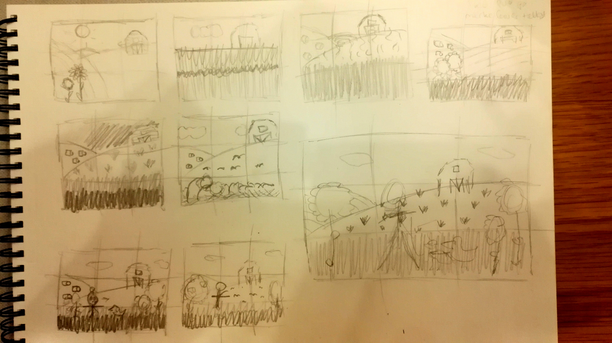
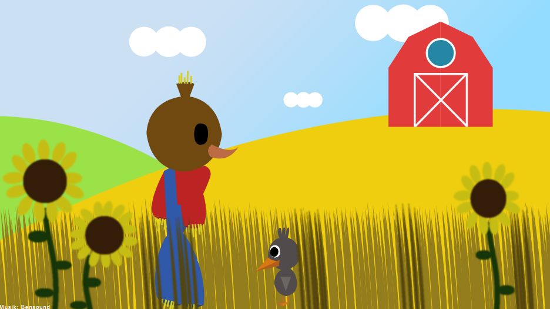

I dette forløb lavede vi to animationsforløb. Det første var individuelt, imens det andet var gruppearbejde.
I den individuelle animation lavede jeg et interaktionsspil om et fugleskræmsel og en fugl, der lander på marken, som fugleskræmslet vogter over. Det er så op til brugeren om fuglen skal have lov til at hvile sig på marken eller om fugleskræmslet skal skræmme den væk.
Stilen i min animation er inspireret af Flat design, som er en flad og simpel stilart med en bred farvepalette. Min idé går ud på at holde den simple og rene form, men tilføje nogle flere detaljer og noget mere dybde på karaktererne, imens jeg holder flat design stilen, som den er, til min baggrund. Geometri kommer også til at være et nøgleord for mine karakterer og baggrunden, samt jeg beholder den samme farvepalette, som stilarten allerede har. Jeg udarbejdede følgende skitser:
Jeg valgte at arbejde videre med disse to figurer:
Derefter arbejdede jeg med hvordan baggrunden skulle se ud og de endelige figurer.
Jeg kom på disse ideer til baggrunden:
Mit endelige design for baggrunden og figurerne kom til at se således ud:
Her er mit spritesheet for de to figurer:
Derefter gik jeg i gang med at lave min endelige animation.
Den færdige animation, jeg fik lavet, kan ses i dette link:
AnimationenOpgaven vi fik stillet til dette projekt var at lave animationsfortælling med interaktioner for børn mellem 13 og 15 år for Sex og samfund om billeddeling. Dette var for at skabe opmærksomhed for Sex og samfunds underside Privatsnak. Udover den interaktive historie skulle der laves en Facebook eller Instagram annonce, der leder hen til historien.
Dette link er et link til vores interaktive historie:
AnimationenHer er et link til dokumentationssitet:
DokumentationssiteUdover animationen og dokumentationssitet lavede vi en Facebookannonce.
Facebookannoncen kan også ses på dokumentationssitet, men kom til at se således ud: